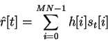
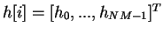
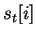

Next: Displaying PrePSTH (the predicted
Up: Prediction
Previous: Get PredFiles
Contents
STRFPAK predicts neuronal responses after you provide the new stimulus
from the previous section.
Whether the estimated Jackknife-version
STRF or estimated STRF is used are based on the value
of  . The equation needed to generate new predictions given a stimulus and a STRF is as follows:
. The equation needed to generate new predictions given a stimulus and a STRF is as follows:

where
 is the STRF and  is the prediction stimulus.
When all calculations are done, small ``Done Prediction''
window appears.
2004-08-09